Gestión de pendientes y proyectos para soporte, TI y operaciones
Nada se pierde entre correos y juntas
Registra cada solicitud, asígnala y sigue su avance hasta cerrarla. Quien reporta consulta su folio sin llamar. Desde $50 MXN por usuario al mes.
- Sin instalar nada
- Actualizaciones incluidas
- Soporte del equipo que lo desarrolla
Trazabilidad completaCada cambio queda registrado con su autor y su fecha.
Qué es SmartPend, para quién es y qué resuelve
Qué es
Un sistema de pendientes, no otro chat
Registras un pendiente, lo asocias a una empresa y un servicio, defines responsable y fecha, y el sistema conserva todo el rastro hasta cerrarlo.
SmartPend concentra los pendientes de tu organización en un solo lugar: quién lo pidió, quién responde, en qué va y qué se hizo. Con historial completo de cada movimiento e inteligencia artificial que acelera el registro y la clasificación.
Para quién
Equipos que responden a terceros
Áreas de soporte, TI, operaciones y servicio que atienden solicitudes de varios clientes o departamentos y necesitan saber en qué va cada una.
Qué resuelve
El seguimiento que hoy vive disperso
Elimina el rastreo por correo, los mensajes sueltos y las hojas de cálculo, y quita las llamadas de «¿cómo va lo mío?» con consulta directa por folio.
Tus clientes
Que reporten y consulten sin llamarte
Publica un formulario en tu propio sitio para que quien reporta lo haga sin tener cuenta, reciba un folio y siga el avance por su cuenta.
- Formularios públicos embebibles
Se embebe con un iframe o se comparte como enlace, y lo configuras por completo: qué campos ve el visitante, a quién se le asigna, colores, PIN de acceso opcional y límites contra abuso.
- Consulta por folio
Quien reporta recibe un folio y ve su estado (recibido, en proceso o resuelto) sin acceder a tu operación.
- Clasificación automática por IA
Si lo activas, lo que llega desde tu sitio se etiqueta solo, sin que nadie tenga que revisarlo primero.
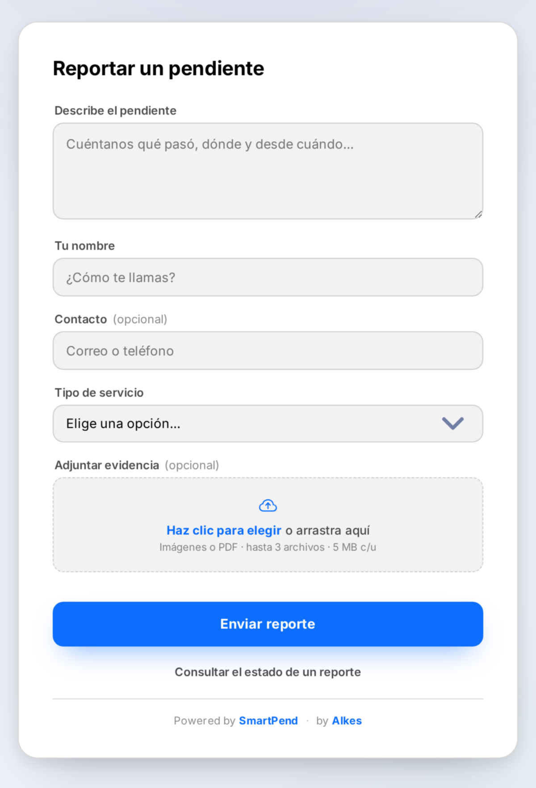
Formulario público embebido en tu sitio
Capacidades
Del pendiente suelto al proceso ordenado
Del registro a la resolución, con formularios para tus clientes, reportes para quien decide y avisos para quien sigue de cerca.
Operación diaria
Todo el contexto de un pendiente en una sola pantalla
Quien atiende no tiene que reconstruir la historia: ve la solicitud, los archivos, las notas previas y cada cambio de estado con su responsable.
- Asignación con responsable y estado
Cambios de estado controlados y visibles para todo el equipo.
- Archivos y notas por pendiente
Adjunta documentos o pega imágenes directo desde el portapapeles.
- Historial de cada movimiento
Quién hizo qué y cuándo, sin depender de la memoria de nadie.
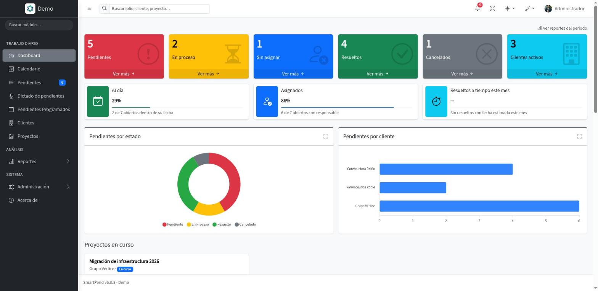
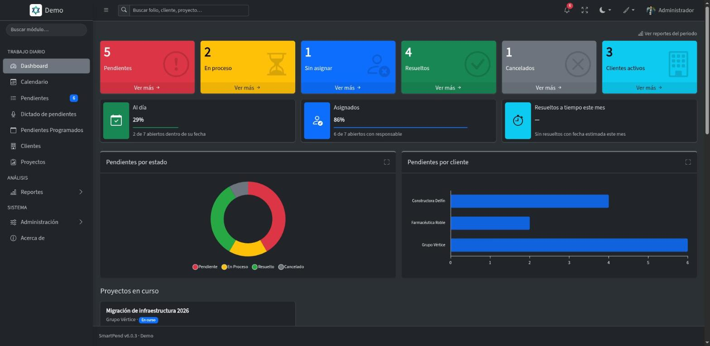
Panel principal con el estado de la operación
Inteligencia artificial
Registrar deja de ser el cuello de botella
La IA está integrada donde realmente ahorra tiempo: al capturar, al clasificar y al planear un proyecto. No es un chat aparte, es parte del flujo.
- Dictado por voz
Cuéntale a la IA que solicita el cliente/usuario y el problema que presenta, y la IA reformateará el mensaje para registrar el pendiente de forma clara para el técnico.
- Búsqueda inteligente de servicio
La IA lee la descripción y sugiere el servicio que mejor aplica antes de guardar.
- Pendientes de un proyecto con IA
Describe el proyecto y recibe la lista de pendientes propuesta, revisable y editable antes de crearla.
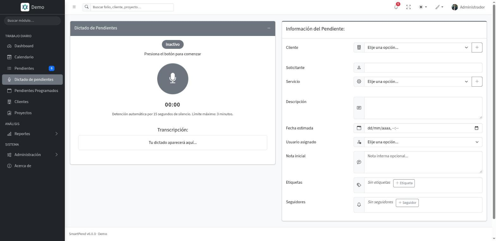
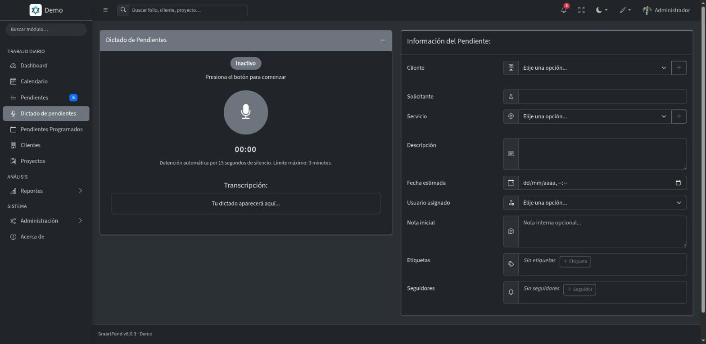
Dictado por voz durante el registro
Organización
Calendario, recurrencias y proyectos
Más allá del listado, SmartPend ubica cada pendiente en el tiempo: cuándo vence, si se repite y a qué proyecto pertenece.
- Calendario por color de estado
Vista de mes, semana, día o lista con cada pendiente coloreado según su estado.
- Pendientes programados
Define una recurrencia en días, semanas, meses o años y el sistema genera el pendiente solo.
- Expediente del proyecto
Notas, archivos, historial e involucrados del proyecto, con progreso calculado según los pendientes resueltos.
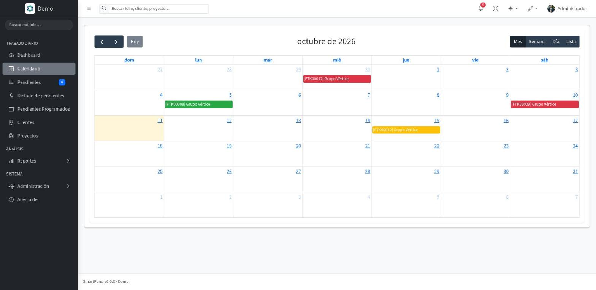
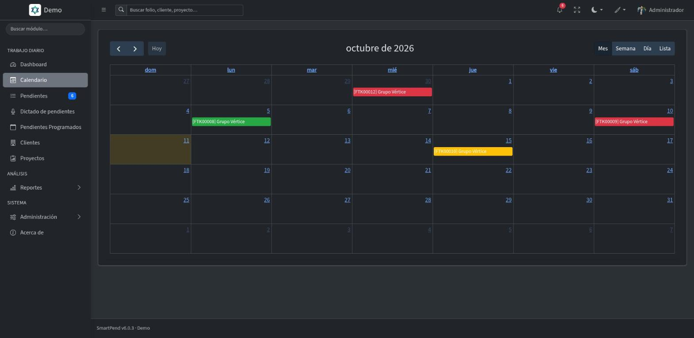
Calendario con el estado de cada pendiente
Seguimiento
Etiquetas, seguidores y avisos dentro de la app
Clasifica lo que importa y entérate cuando se mueve, sin depender de que alguien te copie en un correo.
- Etiquetas de color propias
Clasifica pendientes, proyectos y tareas programadas con etiquetas de color propias de tu organización.
- Seguidores por pendiente o proyecto
Suma personas a un registro y les llega el aviso dentro de la app cuando algo cambia.
- Etiquetado automático por IA
La IA lee la descripción y propone las etiquetas que aplican, también en el dictado por voz.
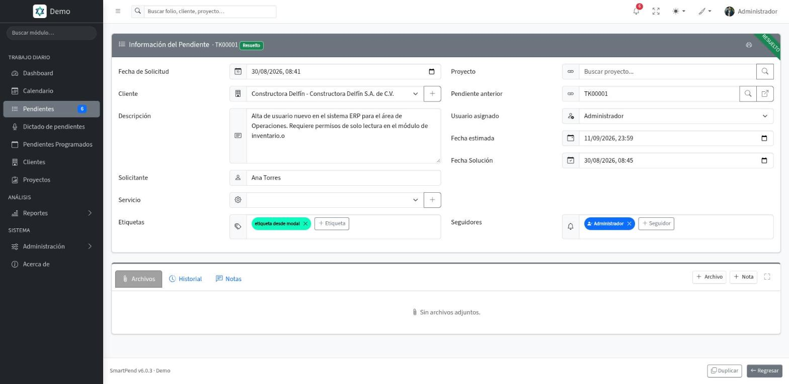
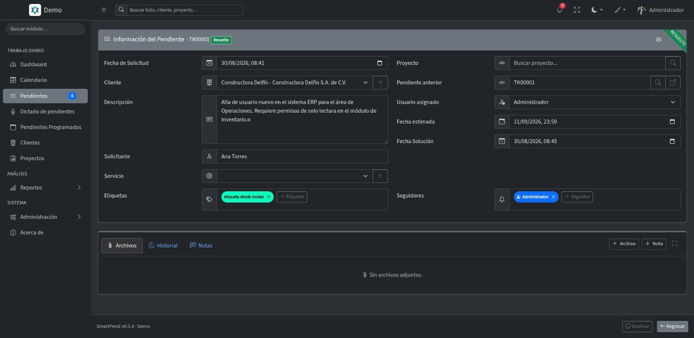
Etiquetas y seguidores en el detalle de un pendiente
Reportes
Diez reportes, con periodo comparado
Cada reporte se compara automáticamente contra el periodo anterior equivalente, y se exporta cuando lo necesitas para juntas o auditorías.
- Diez reportes por familia
Resumen, cumplimiento de SLA, vencidos y en riesgo, antigüedad, desempeño por usuario, actividad por cliente, demanda por servicio, avance de proyectos, salud de programados y bitácora de auditoría.
- Comparación contra el periodo anterior
Cada cifra se lee junto a su equivalente del periodo previo, no aislada.
- Exportación a Excel, CSV o PDF
El mismo reporte, en el formato que tu equipo o tu cliente necesite.
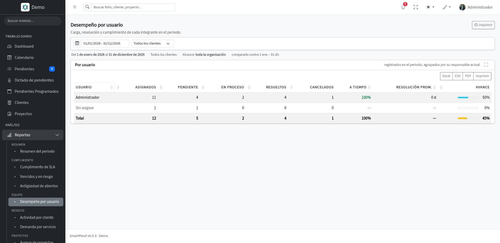
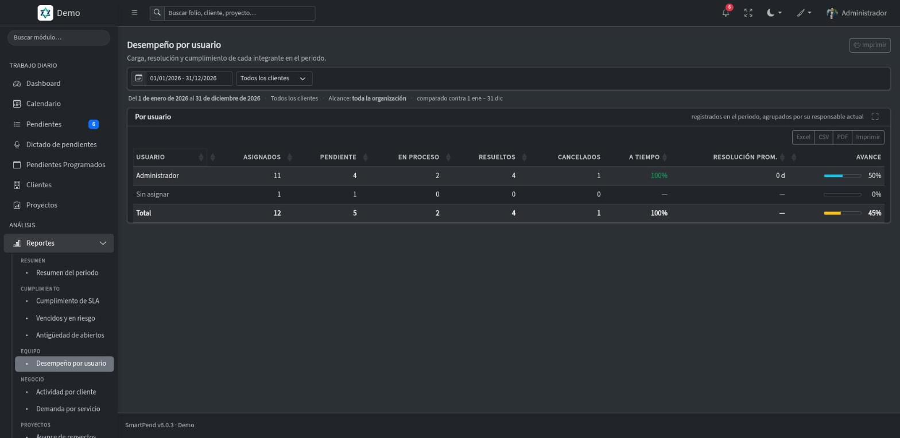
Reportes con comparación de periodo y exportación
Tu día
Tablero, búsqueda y avisos a tu medida
Ve tus pendientes como columnas de trabajo, encuentra cualquier folio desde cualquier pantalla y elige de qué quieres enterarte.
- Tablero de pendientes
Una columna por estado; arrastra una tarjeta para iniciarlo, resolverlo o cancelarlo, con las mismas reglas del formulario.
- Búsqueda en todo el sistema
Folios, clientes, proyectos y usuarios desde la barra de arriba, solo con lo que tú puedes abrir.
- Tú eliges qué avisos recibir
Un interruptor por tipo de aviso: estados, asignaciones, notas, archivos, etiquetas, cambios de datos y lo que haces tú mismo.
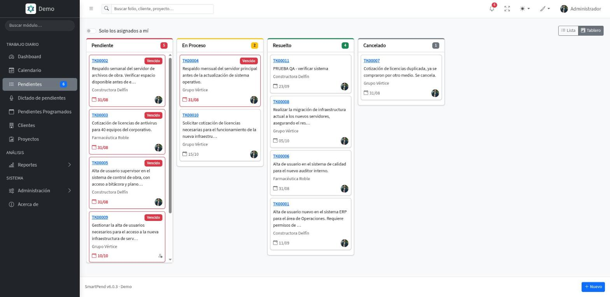

Tablero: una columna por estado
Y todo lo que sostiene la operación
Permisos por grupos
Organiza usuarios en grupos y define qué áreas ven y gestionan información de otras.
Historial de cada pendiente
Quién hizo qué y cuándo, registrado automáticamente en cada movimiento.
Filtros rápidos
Alterna estados con pestañas de un clic y filtra cada columna: contiene, empieza con, vacío y más.
Clientes y servicios
Asocia cada pendiente a su cliente y al servicio correspondiente.
Accesos cruzados
Salta entre proyectos, pendientes relacionados y usuarios desde cualquier registro.
Archivos y notas
Adjunta documentos o pega imágenes directo desde el portapapeles, en pendientes y proyectos.
Ver todas las capacidades avanzadas
Capacidades avanzadas
Gestión de proyectos
Organiza tareas por proyectos con seguimiento de progreso.
Multiusuario
Todo el equipo sobre la misma información; la campana se actualiza sola.
Seguridad Argon2id
Las contraseñas se protegen con Argon2id.
Gestión integral
Empresas, servicios, proyectos y usuarios.
Acceso desde el navegador
Entra desde cualquier equipo, sin instalar nada.
Dictado inteligente por voz
Registra tareas con voz y deja que la IA las organice.
Roles y permisos a tu medida
Define por rol qué se puede ver, crear, editar y dar de baja en cada módulo, con ajustes para una persona concreta.
Visibilidad entre áreas
Reglas por grupo para colaboración controlada entre departamentos.
Manual dentro del sistema
La ayuda se abre en la pantalla donde estás, con buscador.
Imprime como documento
Un pendiente o un proyecto sale en papel con el logo de tu organización y sin los botones de la pantalla.
Duplicar como plantilla
Abre un alta nueva con los datos, etiquetas y seguidores de otro registro ya cargados.
Alta rápida de catálogos
Crea el cliente, servicio, categoría o etiqueta que falte sin salir del formulario que estás llenando.
Por qué SmartPend
¿Por qué usar SmartPend?
Descubre cómo nuestro sistema transforma la gestión de tareas en tu organización.
Maximiza la eficiencia de tu equipo
SmartPend elimina las barreras de comunicación
SmartPend está diseñado para eliminar las barreras de comunicación y optimizar los flujos de trabajo, permitiendo que tu equipo se concentre en lo que realmente importa: resolver los pendientes.
- Ahorra tiempo
Dicta el pendiente por voz y la IA lo redacta y lo clasifica.
- Mejora la colaboración
Facilita el trabajo en equipo entre departamentos.
- Incrementa productividad
Optimiza recursos y elimina cuellos de botella.
- Garantiza trazabilidad
Registro completo de cada acción y responsable.
- Prioriza lo urgente
Ordenado por estado y fecha estimada: lo que vence antes aparece primero.
- Mejor decisión operativa
Dashboard con métricas claras: sin asignar, totales reales y carga por empresa.
Integración con tus procesos
SmartPend se adapta a tu forma de trabajar, no al revés.
Personalización a la medida
Configuras tus empresas, servicios, etiquetas, roles y permisos. Si necesitas un módulo a la medida de tu operación, escríbenos.
La misma información para todos
Todo el equipo trabaja sobre la misma información desde cualquier equipo, y la campana avisa de los cambios sin recargar la página.
Asistencia inteligente
La IA trabaja donde ahorra tiempo: redacta el pendiente a partir de tu voz, sugiere el servicio y las etiquetas, y propone los pendientes de un proyecto.
Gobernanza por grupos y reglas
Configura permisos de visibilidad entre departamentos una sola vez y aplícalos en pendientes, proyectos, búsquedas y accesos directos de forma automática.
La diferencia SmartPend
No ofrecemos solo un software, ofrecemos una solución completa a tus necesidades de gestión. Con soporte directo del equipo que lo desarrolla y actualizaciones constantes, tu inversión evoluciona contigo.
Precios
Un precio por usuario, sin planes
Pagas por cada usuario con cuenta activa, y el precio baja con cada usuario que sumas. Incluye soporte, mantenimiento y las actualizaciones que se publiquen.
Precio por usuario
Desde$50MXN por usuario al mes
Más usuarios, menos pagas por cada uno
- Cada usuario adicional baja 1% el precio de todos tus usuarios.
- Arriba de 50 usuarios, obtienes el descuento máximo de 50%.
- Sin planes ni paquetes: todas las funciones para todos tus usuarios.
- Al sumar un usuario se cobra al momento la parte proporcional del periodo. Al reducir tus usuarios contratados, el cobro menor rige desde tu siguiente renovación.
- Con el plan anual solo pagas 10 meses, y los otros 2 son gratis.
- Soporte y mantenimiento incluidos
- Actualizaciones sin costo adicional
- Sin instalaciones ni servidores propios
- Precios en pesos mexicanos
Preguntas frecuentes
Lo que más nos preguntan sobre SmartPend
¿Tienes otra duda? Escríbenos a soporte@alkes.mx.
¿Qué es SmartPend?
Un sistema de Alkes que concentra los pendientes: quién los pidió, quién responde, en qué van y su historial completo.
¿Cuánto cuesta?
Desde $50 MXN por usuario al mes. Se cobra por usuario con cuenta activa, y cada usuario adicional baja 1% el precio de todos hasta llegar a 50% de descuento arriba de 50 usuarios. Con el plan anual solo pagas 10 meses, y los otros 2 son gratis.
¿Cómo se calcula mi mensualidad?
Todos tus usuarios pagan el mismo precio, que baja con cada usuario que sumas. Con 15 usuarios son 15 × $86 = $1,290 MXN al mes; con 50 usuarios son 50 × $51 = $2,550 MXN al mes. La calculadora de la sección de precios te da el total exacto.
¿Qué pasa si agrego o quito usuarios a mitad del periodo?
Al sumar un usuario se cobra al momento la parte proporcional hasta tu próxima factura, y desde la siguiente el precio por usuario se ajusta a tu nuevo total. Desactivar un usuario libera su lugar para otra persona, pero no cambia el cobro: para pagar menos, reduce tus usuarios contratados en Configuración y la reducción rige desde la siguiente renovación; no hay reembolso a mitad del periodo.
¿Hay planes o límites de funciones?
No. El precio depende solo del número de usuarios con cuenta activa; todos tienen las mismas funciones.
¿Mis clientes pueden reportar sin cuenta?
Sí. Un formulario público recibe el reporte, entrega un folio y permite consultar el estado.
¿Qué hace la IA?
Convierte tu dictado en un pendiente claro, sugiere el servicio y las etiquetas, y propone los pendientes de un proyecto.
¿Hay que instalar algo?
No. Es una plataforma en la nube y se entra por el navegador.
¿Puedo probarlo?
Sí, con el demo y sus credenciales de prueba.
¿Qué reportes tiene?
Diez reportes con comparación contra el periodo anterior, exportables a Excel, CSV o PDF.
Confianza
Un equipo con nombre, correo y teléfono
SmartPend es un producto de Alkes. Nuestro equipo desarrolla, opera y da soporte al mismo sistema.
Plataforma en la nube
Sin instalaciones ni servidores propios. Entras por el navegador y empiezas a trabajar.
Infraestructura protegida
Servidor con motor de seguridad anti-DDoS y acceso cifrado en todo el sistema.
Actualizaciones incluidas
Las nuevas funciones y correcciones llegan sin costo adicional durante tu periodo.
Tus datos, separados
Permisos por grupos y visibilidad controlada entre áreas, empresas y servicios.
Soporte del equipo que construye SmartPend
Nuestro equipo desarrolla, opera y da soporte a SmartPend de principio a fin. Para soporte, una demostración guiada o un módulo a la medida de tu operación, hablas directamente con el equipo que construye el sistema.
Novedades
El producto se mueve, y queda por escrito
Historial público de versiones: lo que se entregó, cuándo y qué cambia para quien lo usa.
v6.4.0 Un pendiente resuelto o cancelado queda como está 26 oct 2026
- Historial confiable
Un pendiente resuelto o cancelado ya no se edita ni se reasigna. Puedes seguir agregando notas, archivos, seguidores y etiquetas, o duplicarlo para empezar otro.
- Los archivos se conservan
En un pendiente cerrado puedes subir archivos, pero ya no se borran.
v6.3.1 Mejora interna del manejo de archivos 24 oct 2026
- Sin cambios en tu forma de trabajar
Se ordenó el código que guarda tus archivos para que sea el mismo en todos los sistemas de Alkes.
v6.3.0 Mi nube: tus archivos en un solo lugar 23 oct 2026
- Mi nube
En el menú de tu nombre, después de «Mi perfil y ajustes»: todos tus archivos con el pendiente o proyecto al que pertenecen, para verlos, descargarlos, borrarlos o subir archivos sueltos. Cada quien ve solo lo suyo.
- Tu espacio, siempre a la vista
Cada usuario tiene su propio espacio y una barra te dice cuánto llevas usado, con aviso cuando se está llenando.
- Archivos en tabla
Los archivos de pendientes y proyectos se ven en una tabla con búsqueda y orden. Los borra quien los subió o un administrador.
- Formulario público
Los archivos que adjunta quien reporta se guardan con el pendiente; si no hay espacio, el pendiente se crea igual y se le avisa.
- Archivos mejor protegidos
Cada archivo se revisa por su contenido real y solo se descarga con permiso.
v6.2.6 Captura más a prueba de errores 17 oct 2026
- Proyectos coherentes
Un proyecto no puede terminar antes de empezar, y su cliente y quien lo lleva deben ser de tu organización.
- Pendientes programados editables
Ya puedes editar un pendiente programado que ya inició; antes la fecha de inicio pasada lo impedía.
- Teléfono y correo del cliente
Se revisa que tengan un formato válido.
v6.2.5 El visor de PDF funciona en el celular 16 oct 2026
- PDF dentro del mismo visor
En Chrome para Android y otros navegadores sin visor propio, el PDF ahora se ve en el modal, página por página, con su botón Descargar.
v6.2.4 «Recuérdame» en hasta 5 equipos 16 oct 2026
- Cada equipo se recuerda por separado
Puedes recordar hasta 5 equipos a la vez; al recordar el sexto se olvida el que lleva más tiempo sin usarse.
- Lista en Mi perfil
En Mi perfil › Seguridad ves tus equipos recordados con navegador, sistema, IP y último uso, y puedes olvidar el que quieras.
- Más seguro
Cerrar sesión olvida solo ese equipo, y cambiar la contraseña o dar de baja a un usuario olvida sus equipos recordados. Cada persona inicia sesión una vez más y vuelve a marcar «Recordarme».
v6.2.3 Correos de recuperación funcionando 16 oct 2026
- Se corrigió el envío de correos
Se resolvió un error que impedía mandar el código de recuperación de contraseña y los correos de documentos.
v6.2.2 Recuperar contraseña y acceso desde el celular 16 oct 2026
- Recupera tu contraseña desde el acceso
Escribes tu correo, recibes un código de 6 dígitos que vence a los 15 minutos y con él pones tu contraseña nueva.
- Acceso cómodo en el celular
La pantalla de acceso se ajusta a cualquier tamaño, en vertical y en horizontal, sin hacer scroll ni tapar la tarjeta con el teclado.
v6.2.1 Tablas con el mismo control de orden 15 oct 2026
- Un solo control de orden
Las tablas de Reportes y el modal de selección ordenan desde el encabezado con el mismo menú (ascendente, descendente, limpiar) que el resto.
v6.2.0 Botones iguales y en el mismo orden en todos los módulos 15 oct 2026
- Cada botón, siempre del mismo color
Guardar y Borrador en azul, Procesar en verde, Cancelar y Eliminar en rojo, todas las autorizaciones en amarillo, Imprimir y Regresar en gris. Los mismos colores en todos los módulos.
- Siempre en el mismo orden
De izquierda a derecha, por relevancia: primero guardar, luego las acciones, las cancelaciones y las autorizaciones. Al extremo derecho van Enviar, Información y Regresar.
- Sin menús escondidos
Todos los botones están a la vista, uno por uno, rellenos y con su ícono. Ya no hay botones de solo contorno ni menús «Más».
- Mejor en el celular
En pantallas chicas los botones muestran solo su ícono para que quepan, y la acción principal conserva su texto.
- El botón de correo, más corto
Ahora se llama simplemente Enviar.
v6.1.0 Envía pendientes, proyectos y fichas de clientes por correo 15 oct 2026
- Del pendiente al correo de tu cliente
Con el botón Enviar mandas la ficha de un pendiente, el informe de un proyecto o la ficha de un cliente. El PDF va como archivo adjunto.
- Revisas antes de enviar
Una ventana te muestra el correo del cliente, el asunto y el mensaje para que los ajustes, y eliges qué secciones incluye el PDF.
- Con el nombre de tu organización
El correo sale a nombre de tu organización, con tu firma y tu pie. Las respuestas de tus clientes llegan al correo que elijas.
- Con tu propio servidor de correo
Si lo prefieres, configura el servidor de correo de tu organización para que los envíos salgan desde tu dominio y sin el límite de uso justo.
v6.0.6 Formularios más claros, con ícono en cada campo 14 oct 2026
- Un ícono en cada campo
Cada dato que capturas lleva su ícono al lado izquierdo, para reconocer de un vistazo qué se pide.
- Nombre y campo en la misma línea
El nombre del campo queda a la izquierda y el campo a su derecha, en todos los formularios y ventanas.
- Tarjetas con título e ícono
Cada bloque de una pantalla se identifica con su ícono y su título.
- Configuración y datos para facturar con el mismo orden
Las pantallas de Configuración, suscripción y datos para facturar siguen el mismo acomodo que el resto del sistema.
v6.0.5 Imprime proyectos, pendientes y clientes como documento 14 oct 2026
- Un PDF listo para imprimir
El botón Imprimir, al pie del formulario de un proyecto, un pendiente o un cliente, genera un documento con los datos del registro.
- Tú eliges qué incluye
En una ventana marcas las secciones que quieres (pendientes, notas, personas, archivos, imágenes, historial, servicios contratados) y ves cuántos elementos tiene cada una. Recuerda tu última elección.
- Se ve sin salir de la pantalla
El documento se abre en una ventana, igual que los archivos adjuntos, con la opción de descargarlo.
- Con el logo y el nombre de tu organización
Arriba lleva el logo y el nombre de tu organización. SmartPend aparece solo como un crédito discreto al pie.
- Los reportes, con el mismo estilo
El PDF y la impresión de los reportes usan el mismo diseño neutro y la misma cabecera.
v6.0.4 Cobro por usuario, cupo editable y asistente de IA por usuario 13 oct 2026
- Tú decides cuántos usuarios contratas
Ya no hay planes ni topes por tipo de usuario. Contratas un número de usuarios y cada persona activa ocupa un lugar, sea cual sea su rol.
- Cambia tu cupo desde Configuración
El administrador sube o baja el total de varios en varios y ve la vista previa del cobro antes de confirmar. Al subir, se cobra al momento la parte proporcional; al bajar, el cambio se aplica en la renovación.
- Aviso cuando el cupo se llena
Dar de alta o reactivar a alguien con el cupo lleno no genera ningún cobro: el sistema avisa y tú decides si amplías.
- Asistente de IA que crece contigo
El dictado de pendientes y el asistente usan un cupo mensual de IA que aumenta con cada usuario contratado.
- Datos para facturar
En Configuración puedes capturar, si los necesitas, los datos fiscales de tu suscripción.
v6.0.3 La misma forma de trabajar en SmartPend, Mantis y GeoCheck 8 oct 2026
Resumen de la versión
- El pendiente abierto, en su tarjeta
El folio y el estado del registro que consultas salen en el encabezado de la tarjeta principal del formulario, junto a sus datos. Arriba ya no se repite el nombre del módulo.
- Manual de usuario desde tu nombre
La ayuda se abre desde el menú de tu nombre, arriba a la derecha, y ya no ocupa espacio al pie del menú lateral.
- Logo y foto con un solo botón
En Configuración y en tu perfil, el logo de la organización y tu foto se cambian con un botón propio y se ven al instante. El estado de la suscripción sale en español.
- Formularios y dashboard más limpios
Cada formulario tiene Regresar al pie y sus tarjetas se maximizan. Los indicadores del dashboard dejan los degradados y usan los colores de tu tema.
- Maximizar junto al buscador
En los listados, el botón para ver la tabla a pantalla completa está a un lado de Buscar.
v6.0.2 Pendientes sin asignar visibles a todos 8 oct 2026
- Sin asignar, visible para todo el equipo
Un pendiente o plantilla sin persona asignada ahora aparece en la lista de cualquier integrante de la organización, igual que en Jira, ClickUp o Asana. Antes solo lo veía quien lo creó o quien estaba en su mismo grupo.
- El creador siempre ve su propio pendiente
Quien registra un pendiente o una plantilla programada ahora lo ve siempre, aunque lo asigne a alguien de otro grupo o a un área diferente.
- Proyectos sin responsable visibles al equipo
Un proyecto sin responsable asignado ya aparece para todos los integrantes de la organización, en lugar de quedar oculto.
v6.0.1 Dashboard mejor espaciado 6 oct 2026
- Indicadores con aire
Las tarjetas de color y las barras de avance del dashboard ya no se ven pegadas.
Ver historial completo, de v6.0.0 a v1.0.0
v6.0.0 Interfaz renovada, tablero de pendientes y búsqueda en todo el sistema 4 oct 2026
Resumen de la versión
- Interfaz renovada de punta a punta
SmartPend estrena diseño completo. El encabezado, el menú y el pie se quedan fijos mientras trabajas, y tablas, calendario, gráficas y avisos pasan a sus versiones actuales. Se trabaja igual de cómodo en el celular, la tablet o la computadora.
- Tablero de pendientes
Además de la lista, los pendientes se ven en un tablero con una columna por estado. Arrastra una tarjeta para iniciarlo, resolverlo o cancelarlo: se abre la misma confirmación del formulario, con las mismas reglas. Los vencidos se marcan en rojo, y un interruptor deja solo los asignados a ti.
- Búsqueda en todo el sistema
Escribe un folio, un cliente o un proyecto en la barra de arriba, desde cualquier pantalla. Los resultados llegan agrupados en pendientes, proyectos, clientes y usuarios, con lo buscado resaltado. Solo aparece lo que tú puedes abrir.
- Mi perfil y ajustes, sin salir de lo que haces
Desde tu nombre, arriba a la derecha, se abre una ventana con tus datos y tus cifras del mes, el cambio de contraseña, la opción de cerrar sesión en los demás equipos, la apariencia y tu actividad reciente.
- Tú eliges qué avisos recibir
Un interruptor por tipo de aviso: cambios de estado, asignaciones, notas, archivos, etiquetas y seguidores, cambios de datos y lo que haces tú mismo. La campana distingue de un vistazo lo nuevo de lo leído.
- Tema automático, 20 colores y modo compacto
Además de claro y oscuro, el tema automático sigue al de tu equipo. El color de énfasis suma 14 tonos nuevos, y el modo compacto deja más filas a la vista en pantallas bajas.
- Un dashboard que dice cómo va el trabajo
Cada indicador lleva directo al listado de ese estado. Tres barras miden qué tanto está al día: abiertos dentro de su fecha, abiertos con alguien asignado y resueltos a tiempo en el mes. Los proyectos en curso muestran su avance y su equipo, con los atrasados primero, y la actividad reciente se lee como una línea de tiempo.
- Historial, notas y adjuntos más fáciles de seguir
El historial es una línea de tiempo agrupada por día. Las notas se leen como una conversación, y una nota rápida se envía con Enter. Los adjuntos se arrastran con barra de progreso, se ven en cuadrícula con miniaturas y las fotos se recorren en galería.
- El pendiente avisa cuando se le acaba el tiempo
Al abrir un pendiente vencido, un aviso dice desde cuándo; si vence en las próximas 24 horas, también lo advierte. Una cinta en la esquina marca si está vencido, resuelto o cancelado.
- Listados que caben en la pantalla
El texto largo se acomoda en varias líneas para que las columnas quepan, y si aun así hay que desplazarse, la columna de acciones se queda a la vista. Cada columna tiene su propio filtro (contiene, empieza con, vacío y más) y cualquier listado se exporta a PDF.
- Imprime un pendiente o un proyecto
Sale como documento, con el logo de tu organización, todas sus secciones una tras otra y la fecha de impresión, sin los botones de la pantalla.
- Menú con buscador y con tu logo
Escribe el nombre de un módulo y ábrelo con Enter; las teclas / o Ctrl+K llevan al buscador desde cualquier pantalla. El menú muestra el logo de tu organización y cuántos pendientes tienes abiertos, y se puede reducir a una fila de íconos.
- Manual de usuario dentro del sistema
Un botón al pie del menú abre la ayuda justo en la sección de la pantalla donde estás: 44 preguntas con buscador.
- Errores claros en los formularios
Si un dato falta o no es válido, el campo se marca en rojo con el mensaje debajo, usando el nombre que ves en pantalla. En las ventanas largas, el título y los botones se quedan fijos y solo se desplaza el contenido.
Impacto en tu día a día
- Los mismos flujos, con otra cara
Lo que ya sabías hacer se hace igual. Cerrar sesión cambia de lugar: ahora está en el menú de tu nombre, arriba a la derecha.
- Para ordenar, el botón junto al título
En los listados, el clic sobre el título de una columna ya no la ordena; se ordena con su botón. El filtro de cada columna sube del pie de la tabla al encabezado.
- Tu nombre y tu correo los cambia un administrador
Desde Usuarios, como siempre. En tu perfil se ven, pero no se editan.
- Amarillo y Claro dejan de ser colores de énfasis
Con texto blanco no se leían. Quien los tenía pasa a Gris y puede elegir otro desde Mi perfil y ajustes.
- Sale el estado «En revisión»
Ningún paso del sistema llevaba a él. Los pendientes abiertos son los que están en Pendiente o En proceso.
- En proyectos, los seguidores ya no borran archivos
Un seguidor consulta el proyecto y sube archivos, pero borrarlos queda para quien puede operarlo, igual que en los pendientes.
- Una recarga la primera vez
Si tenías SmartPend abierto durante la actualización, recarga la página antes de seguir.
Corrección de errores (bugs)
- El botón Duplicar se multiplicaba
En Proyectos y Pendientes programados aparecía un botón Duplicar más cada vez que se cambiaba un campo. Ahora siempre hay uno.
- La ✕ que escondía secciones
Las tarjetas de los formularios tenían un botón que ocultaba la sección entera, sin forma de recuperarla salvo recargando la página. Se quitó.
- El buscador de una columna reordenaba la tabla
En las tablas dentro de los formularios, hacer clic en el buscador de una columna cambiaba el orden de las filas.
- Modo oscuro incompleto
La fila de los días del calendario salía en blanco y las gráficas no cambiaban de color con el tema.
- «Sin asignar» contaba de más
El indicador del dashboard sumaba pendientes resueltos y cancelados sin persona asignada. Ahora cuenta solo los abiertos.
- Movimientos de «Desconocido»
Lo que registran el formulario público y los pendientes programados aparecía en el historial a nombre de «Desconocido». Ahora dice «Sistema».
v5.2.2 Íconos a color y contratación sin tropiezos 3 oct 2026
- Íconos que se reconocen
El ícono de la pestaña se lee igual en fondo claro y oscuro, y el de la pantalla de inicio del celular conserva los colores del logo.
- Contratar sin errores
Se corrigió una validación de seguridad que podía interrumpir el pago al contratar un plan.
v5.2.1 Lo asignado a ti siempre se ve 3 oct 2026
- Lo tuyo, aunque no estés en un grupo
Los pendientes asignados a ti, los proyectos a tu cargo y las tareas programadas que te tocan se ven y se operan siempre, estés o no en un grupo.
- Adjuntos que se abren a quien debe
Un adjunto de un pendiente que cambió de organización ya no le aparece bloqueado a quien sí tiene acceso.
- Pagar después de un cobro fallido
Al ponerte al corriente, tu cuenta sale del periodo de gracia en ese momento.
- Íconos nuevos en el navegador
Favicon e ícono de inicio renovados.
v5.2.0 Revisión de seguridad de todo el sistema 14 sep 2026
Resumen de la versión
- Auditoría completa y endurecimiento
Se revisó el sistema de punta a punta —sesiones, formularios, permisos entre organizaciones, entrega de archivos y registro de actividad— y se aplicaron las correcciones que salieron de esa revisión. No cambia cómo se trabaja: es trabajo de cimientos.
- Los archivos adjuntos exigen sesión y permisos
Antes, quien tuviera la dirección exacta de un adjunto podía abrirlo sin entrar al sistema. Ahora toda descarga comprueba quién eres y si ese registro es tuyo o de tu grupo. Si guardaste el enlace directo de algún archivo, deja de funcionar: los adjuntos se abren desde el pendiente o el proyecto, como siempre.
- Cada organización, más aislada de las demás
Se reforzaron las comprobaciones de pertenencia en la administración de usuarios y grupos, para que ninguna acción pueda alcanzar registros de otra organización.
- Las contraseñas ya no llegan a la bitácora
El registro de actividad oculta contraseñas, códigos y claves antes de escribir nada en disco.
- Los fallos ya no muestran detalles internos
Si algo se rompe, el sistema lo anota en su bitácora en vez de enseñar rutas y detalles técnicos en pantalla.
- Folios sin choques
Dos altas al mismo tiempo ya no pueden llevarse el mismo número de folio.
Impacto en tu día a día
- Nada que aprender de nuevo
Las pantallas y los flujos son los mismos. Lo único que se nota es el punto de los adjuntos.
- Una recarga la primera vez
Si tenías SmartPend abierto durante la actualización, la primera acción en esa pestaña te pedirá recargar la página. Después, normal.
Corrección de errores (bugs)
- «Acceso denegado» al consultar un pendiente
Al abrir un pendiente que sí se podía consultar, saltaba un aviso de «No tienes permisos sobre este registro» aunque el pendiente se viera bien detrás. Pasaba cuando la persona asignada no pertenecía a ningún grupo. Ya no aparece: el registro se consulta con normalidad y solo se ocultan los botones de lo que esa persona no puede hacer.
- El bloque de seguidores se quedaba vacío
En esos mismos casos, la lista de seguidores no se pintaba y no decía por qué. Ahora se ve siempre que puedas consultar el registro.
v5.1.1 Correcciones sobre la 5.1.0 9 sep 2026
Corrección de errores (bugs)
- Servicios y Categorías no se dejaban editar
Al guardar un cambio en un servicio o en una categoría, el sistema respondía «permiso denegado» incluso a quien tenía todos los permisos concedidos. Ya se editan con normalidad, y darlos de baja exige el permiso de eliminar, como en el resto del sistema.
- Detalle de escritura en dos avisos
Los mensajes de alta de cliente y de pendiente mostraban los signos de exclamación al revés.
v5.1.0 Roles y permisos a tu medida, IA que planifica proyectos y menos fricción al capturar 9 sep 2026
Resumen de la versión
- Roles y permisos a la medida de tu organización
Se acabó el "administrador o nada". Ahora defines roles con permisos por módulo —ver, crear, editar, dar de baja, operar y un permiso avanzado para actuar sobre el trabajo de otros— y puedes concederle o quitarle un permiso suelto a una persona concreta sin inventar un rol nuevo. Ningún módulo queda cerrado por sistema: quien tú decidas puede entrar a Usuarios, Servicios o Reportes.
- Genera los pendientes de un proyecto con IA
Describe el proyecto y pide la lista de pendientes. Puedes dar instrucciones concretas —"uno por cada sucursal: Norte, Centro y Sur"— y la propuesta llega con su descripción, fecha, servicio y etiquetas. Se revisa y se edita antes de crear nada: hasta que no presionas Crear, no existe ningún pendiente.
- Duplicar como plantilla
Un pendiente, proyecto o tarea programada se abre como punto de partida de uno nuevo, con sus datos, etiquetas y seguidores ya cargados. No se copia nada: se llena el alta y tú decides qué cambiar antes de guardar. En las tareas programadas ahorra volver a elegir toda la recurrencia.
- Alta rápida de catálogos sin salir del formulario
Si al registrar algo falta el cliente, el servicio, la categoría o la etiqueta, se crean ahí mismo con un botón junto al desplegable y quedan seleccionados al instante, respetando lo que cada quien tiene permitido crear.
- Seguir un registro deja de ser automático
Ser responsable ya no obliga a seguir el registro: los seguidores se ponen y se quitan a voluntad. Y un seguidor puede ver el registro aunque no comparta grupo, para casos como el administrativo que prepara una cotización y suma al vendedor.
- Los listados se desplazan de lado
En pantallas estrechas las columnas ya no se esconden detrás de un botón: el listado conserva todas sus columnas y se desliza horizontalmente, que es como se lee una tabla.
- Confirmación al guardar, en todo el sistema
Los formularios guardan solo, campo a campo, pero antes no decían nada. Ahora cada cambio confirma en pantalla que quedó registrado.
- Menos fricción para empezar
Al abrir un alta, el sistema avisa de qué catálogos faltan por crear antes y te lleva a crearlos. Las descripciones de los catálogos y la categoría de un servicio dejan de ser obligatorias, y las fechas de registro se llenan solas.
Impacto en tu día a día
- Cada quien hace exactamente lo suyo
Dejas de repartir permisos de administrador solo para que alguien pueda dar de alta un cliente, y dejas de bloquear a quien únicamente necesitaba una parte del sistema.
- Un proyecto se planifica en minutos
De un título y una descripción a una lista de pendientes revisada, con responsable y fecha, sin capturarlos uno por uno.
- Arrancar el sistema cuesta menos
Una organización nueva puede empezar a capturar desde el primer día: lo que falte se crea sobre la marcha, sin ir y venir entre catálogos.
Corrección de errores (bugs)
- Notificaciones al momento
Los avisos aparecen en cuanto ocurre el movimiento, ya no con hasta un minuto de retraso.
- Movimientos que no avisaban
Iniciar, resolver o cancelar un pendiente, agregar una nota y cualquier cambio en una tarea programada ahora sí notifican a quien sigue el registro. Y quien realiza la acción también recibe su aviso si sigue el registro.
- Avisos que mentían
Quitar una etiqueta o un seguidor que ya no estaban confirmaba el cambio y escribía historial aunque no hubiera pasado nada.
- Borrar un adjunto deja rastro
Eliminar un archivo de un pendiente no quedaba registrado en su historial.
- Altas en blanco que no se podían guardar
Las fechas obligatorias del alta de cliente y de usuario nacían vacías, así que un formulario recién abierto daba error al guardar.
- El modal de pendientes de un proyecto
Ya cierra al guardar; antes se quedaba abierto si se había usado el selector de etiquetas o seguidores.
v5.0.0 Formularios para tu web, reportes, etiquetas y seguidores 29 ago 2026
Resumen de la versión
- Formularios públicos para tu sitio web
Publica un formulario en tu página para que tus clientes reporten sin tener cuenta. Se embebe con un iframe o se comparte como enlace, y lo configuras por completo: qué campos ve el visitante, a quién se le asigna, colores, PIN de acceso opcional y límites contra abuso.
- Consulta de folio para quien reporta
Quien envía un reporte recibe un folio y puede seguir su avance desde el mismo formulario, sin llamar ni escribir. Solo ve el estado y las fechas.
- Módulo de Reportes
Diez reportes agrupados por familias, con periodo, comparación contra el periodo anterior equivalente y exportación a Excel, CSV o PDF. El Dashboard se reenfoca como pantalla operativa del día a día.
- Etiquetas, con sugerencia por IA
Clasifica pendientes, proyectos y tareas programadas con etiquetas de color propias de tu organización. La IA lee la descripción y propone las que aplican, también en el dictado por voz.
- Seguidores y notificaciones en la app
Suma personas a un pendiente, proyecto o tarea programada y se enteran dentro de la plataforma cada vez que algo se mueve, con una campana de avisos siempre a la mano.
- Expediente completo del proyecto
Notas, archivos e historial también a nivel de proyecto, más una pestaña de involucrados con el avance de cada persona del equipo.
- Más autonomía para el equipo
Un miembro del equipo puede tomar un pendiente libre o ponerse como responsable de un proyecto sin esperar a un administrador. Las tareas programadas dejan de ser exclusivas de administradores y ahora llevan su propio historial de cambios.
- Protección reforzada
Los formularios públicos validan los archivos por su contenido real, limitan los envíos por día y controlan desde qué sitios se pueden incrustar. Se endureció además la protección de toda la plataforma frente a incrustaciones no autorizadas.
Impacto en tu día a día
- Tus clientes entran solos
Los reportes llegan desde tu propia web ya clasificados y con responsable, sin capturarlos a mano ni perder correos.
- Menos llamadas de seguimiento
Quien reporta consulta el avance de su folio por su cuenta, cuando quiera.
- Decisiones con datos, no con intuición
Compara el periodo actual contra el anterior y exporta lo que necesites presentar.
Corrección de errores (bugs)
- Aislamiento entre organizaciones
El Dashboard ya no podía mostrar información de otra organización bajo ningún escenario.
- Folios sin duplicados
La generación de folios pasó a ser atómica: dos altas simultáneas ya no pueden generar el mismo número.
- Filtros de listados persistentes
Los filtros, el orden y la paginación de un listado ya no se pierden al entrar a un registro y volver.
- Notas e historial más confiables
Se corrigieron fechas y datos que en algunos casos no se guardaban correctamente en el historial y las notas.
- Historial del proyecto más completo
Ahora refleja también la actividad de sus pendientes: asignaciones, avances y cancelaciones.
- Dictado por voz más estable
Cambiar de cliente durante el dictado ya no borra el servicio que ya se había elegido.
- Campana de notificaciones
Se corrigió su alineación y su comportamiento en pantallas de celular.
v4.0.0 Permisos por grupos, filtros rápidos y mejoras operativas 23 feb 2026
Resumen de la versión
- Permisos por grupos y visibilidad
Controla qué equipos ven y gestionan información de otros, con acceso total para administradores.
- Orden inteligente de pendientes
Ahora se prioriza: En proceso, Pendiente y después fecha más reciente.
- Dashboard: usuarios con más pendientes corregido
Se separan correctamente las columnas Pendientes, Total y % resueltos a tiempo.
- Dashboard: card de pendientes sin asignar
Se reemplazó la métrica anterior por una vista directa de pendientes huérfanos.
- Tablas sin selección de filas
Se eliminó el conteo de filas seleccionadas para una interfaz más limpia en listados resumen.
- Filtros rápidos en listados
Pestañas por estado en Pendientes y Proyectos para cambiar de vista con un clic.
- Hipervínculos a registros relacionados
Botones dinámicos para abrir Proyecto y Pendiente anterior en nueva pestaña desde formularios.
- Nuevas columnas de relación en pendientes
Se añadieron Anterior y Proyecto con acceso directo al registro relacionado.
- Dashboard: gráfica por empresa
Se reemplazó la gráfica por servicio para mostrar carga operativa por empresa activa.
- Fecha de solución protegida
Solo se habilita al marcar el pendiente como resuelto y se bloquean cambios inválidos.
- Solicitante por defecto en proyectos
Los pendientes creados desde proyectos se precargan y guardan como "Interno (Proyecto)".
- Restricción de módulos críticos
Usuarios no admin no ven ni pueden acceder a Usuarios, Grupos, Servicios y Categorías.
- Pegar archivos desde portapapeles
En "Subir archivos" ahora puedes arrastrar, seleccionar o pegar.
v3.0.0 Calendario, pendientes programados e IA en todo el sistema 01 ene 2026
Mejoras del sistema
- Columna "Pendiente" resumida en listados
Todas las tablas que muestran pendientes ahora incluyen una columna "Pendiente" que muestra solo los primeros 50 caracteres de la descripción, permitiendo listados más limpios y fáciles de leer.
- Historial de notas por pendiente
Las notas ya no están limitadas a una sola. Cada pendiente cuenta ahora con un historial de notas, incluyendo las notas previas que se migraron como notas de tipo "Solución" dentro del historial.
- Fecha tentativa de resolución
Cada pendiente puede registrar una fecha tentativa de resolución, lo que facilita la planificación y priorización del trabajo.
- Nuevo módulo de calendario
Se agregó un calendario que se basa en la fecha tentativa de resolución y respeta el código de colores de los estados de los pendientes, ofreciendo una vista visual y clara de la carga de trabajo.
- Mayor flexibilidad en servicios por empresa
Se eliminó la obligación de ligar previamente servicios a una empresa. Ahora puedes registrar pendientes aunque la empresa no tenga asignado el servicio en su catálogo, agilizando el alta de casos.
- Filtros avanzados en módulos clave
Se incorporaron filtros avanzados en las tablas principales de los módulos de pendientes, empresas, proyectos y usuarios, reduciendo el tiempo necesario para encontrar información específica.
- IA integrada en gran parte del sistema
El motor de IA ahora participa en más procesos, como en las modales de alta de pendientes sugiriendo automáticamente el servicio más adecuado y apoyando a los módulos que lo permiten.
- Accesos rápidos desde empresas, proyectos y usuarios
En las tablas de empresas, proyectos y usuarios se añadieron botones en la columna de acciones para ir directamente al módulo de pendientes con el registro seleccionado.
- Previsualización de pendientes
Ahora es posible abrir una ventana emergente para ver una previsualización del pendiente desde varias tablas. Desde esta ventana también se puede ir directamente al módulo de pendientes con el registro seleccionado.
- Asignación de pendientes desde más módulos
Ahora puedes asignar pendientes a usuarios y proyectos directamente desde los módulos que permiten alta de pendientes: empresas, usuarios, proyectos y dictado de pendientes.
- Programador de pendientes recurrentes
Se añadió un programador avanzado que permite crear pendientes repetitivos con periodicidad diaria, semanal, mensual, anual o personalizada, definiendo fechas de inicio y fin para controlar el periodo activo.
- Nuevo motor de dictado por voz mejorado
Cuéntale a la IA que solicita el cliente/usuario y el problema que presenta, y la IA reformateará el mensaje para registrar el pendiente de forma clara para el técnico.
- Listados ordenados por relevancia
Se ajustó el comportamiento de los listados iniciales que antes se mostraban de forma uniforme. Ahora se prioriza la información más relevante, dando mayor visibilidad a los pendientes con mayor prioridad y antigüedad, para que la atención del equipo se enfoque primero en lo más crítico.
Corrección de errores (bugs)
- Validaciones en altas desde modales
Se corrigió un problema que permitía agregar pendientes desde algunas ventanas modales sin datos obligatorios, como la empresa solicitante.
- Fecha de finalización de proyectos
Ahora, cuando se termina el último pendiente de un proyecto, se asigna correctamente la fecha de finalización del mismo.
- Confirmación al registrar pendientes
Se solucionó un bug que impedía mostrar la confirmación de registro de pendientes en los módulos de empresas y usuarios.
- Botón "Limpiar filtros" en tablas iniciales
Se corrigió el botón de limpieza de filtros en las tablas principales de cada módulo, que anteriormente no eliminaba los filtros aplicados.
- Guardado de proyecto asociado a nuevos pendientes
Se corrigió un problema que impedía guardar el proyecto seleccionado al registrar un nuevo pendiente asociado a un proyecto.
Nuevos módulos
- Módulo de calendario
Nueva vista de calendario para consultar pendientes por fecha de forma visual y ordenada.
- Módulo de pendientes programados
Gestor especializado para administrar pendientes recurrentes y su programación de forma centralizada.
v2.0.0 Gestión de Proyectos y Asignación Rápida de Servicios 10 nov 2025
Nuevas funcionalidades para mejorar tu productividad
- Organización por proyectos
Agrupa tus tareas por proyectos para una mejor organización y seguimiento.
- Asignación masiva de servicios
Asigna todos los servicios a una empresa con un solo clic.
- Vinculación de tareas con proyectos
Relaciona cada pendiente con un proyecto específico para mayor control.
- Visualización del progreso
Barra de progreso animada que muestra el avance de cada proyecto en tiempo real.
Mejoras en la experiencia de usuario
- Ventanas mejoradas
Corrección en la visualización de tablas en ventanas emergentes.
- Menú reorganizado
Nueva estructura más intuitiva con acceso directo a proyectos.
- Interfaz mejorada
Títulos actualizados en formularios de usuarios y servicios.
Beneficios para tu equipo
- Mayor eficiencia
Reduce el tiempo en tareas administrativas con la asignación masiva.
- Mejor visibilidad
Control visual del progreso de cada proyecto en tiempo real.
- Colaboración mejorada
Asignación de tareas a proyectos específicos para equipos más enfocados.
v1.0.1 Mejoras en la Experiencia de Usuario 06 nov 2025
Correcciones para una experiencia más fluida
- Eliminación de procesos duplicados
Corregido un problema que causaba inicialización redundante en el formulario de pendientes.
- Mejora en las notificaciones
Las alertas ya no interrumpen tu trabajo mientras escribes.
Impacto en tu día a día
- Flujo de trabajo ininterrumpido
Mantén el foco en tus tareas sin distracciones innecesarias.
- Rendimiento optimizado
Eliminación de procesos redundantes que afectaban el rendimiento.
Mejoras generales
- Actualización del sistema
Versión actualizada con las últimas mejoras de estabilidad.
v1.0.0 Lanzamiento Oficial de SmartPend oct 2025
Presentamos SmartPend: gestión de tareas en un solo sistema
- Control completo de pendientes
Registra, asigna y da seguimiento a todas tus tareas con estados personalizables.
- Gestión de clientes
Organiza toda la información de tus empresas y clientes.
- Catálogo de servicios
Clasifica y asigna servicios a cada empresa.
- Administración de usuarios
Sistema de autenticación y perfiles de usuario.
- Dictado inteligente
Crea tareas usando tu voz con nuestra tecnología de IA.
- Gestión de documentos
Adjunta y organiza archivos relacionados con cada tarea.
Características destacadas
- Diseño responsivo
Accede desde cualquier dispositivo con una experiencia optimizada.
Seguridad y confiabilidad
- Acceso cifrado
Tu sistema se abre por una conexión cifrada.
- Acceso desde el navegador
Entra a tu sistema desde cualquier dispositivo, sin instalar nada.
En camino
Lo que sigue
Asignación por grupo
Envía un pendiente a un equipo completo, no solo a una persona.
Flujo de aprobación
Pasos de validación antes de dar por cerrado un pendiente.
Sugerencia de asignado por IA
El sistema propone quién debería atenderlo según el historial.
Sugerencia por departamento (IA)
Identifica automáticamente el departamento o rol más adecuado para resolver cada pendiente, reduciendo tiempos de derivación.
Resúmenes automáticos (IA)
Botón "Resumir" que genera un resumen breve del caso a partir de notas e historial, junto con próximos pasos sugeridos para supervisores.
Mensajes al cliente/usuario por IA
Generación automática del cuerpo del correo o mensaje al cliente/usuario al resolver un pendiente, usando el contexto del caso. Siempre editable antes de enviar.
Bot de Telegram
Crea y consulta pendientes desde la mensajería que ya usas.
Las fechas, el orden y la disponibilidad de esta funcionalidad están sujetos a cambios sin previo aviso.
Tecnología
Construido con tecnología de punta
Utilizamos un stack tecnológico moderno y robusto para garantizar el rendimiento, la seguridad y la escalabilidad.
Backend
PHP con Medoo ORM y Jaxon para un backend rápido y eficiente.
Base de datos
MariaDB, garantizando integridad y velocidad en el manejo de datos.
Frontend
Bootstrap, DataTables, FullCalendar y SweetAlert2 para una interfaz moderna y responsiva.
Servidor
Nginx con un potente motor de seguridad anti DDoS.
Empieza hoy
Que tu equipo deje de perseguir pendientes
Entra al demo con las credenciales de prueba, o contrata por usuario y empieza a operar el mismo día.
Contacto
Hablemos
Soporte técnico, dudas comerciales o módulos a la medida. Tu mensaje llega a una bandeja real.
Ecosistema Alkes
SmartPend no está solo
Cinco productos desarrollados, alojados y operados por Alkes. Mismo soporte, misma casa.